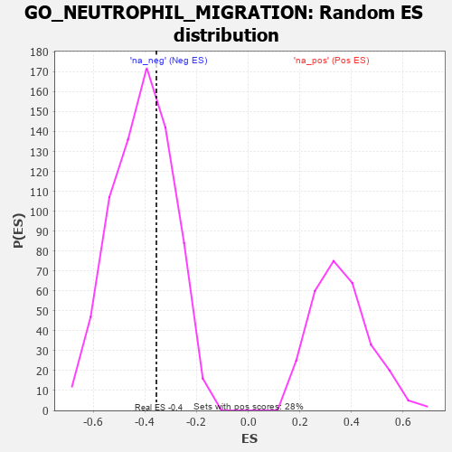

| | | Dataset | 7d |
| Phenotype | NoPhenotypeAvailable |
| Upregulated in class | na_neg |
| GeneSet | GO_NEUTROPHIL_MIGRATION |
| Enrichment Score (ES) | -0.35578278 |
| Normalized Enrichment Score (NES) | -0.8647949 |
| Nominal p-value | 0.66480446 |
| FDR q-value | 0.969362 |
| FWER p-Value | 1.0 |
Table: GSEA Results Summary
 Fig 1: Enrichment plot: GO_NEUTROPHIL_MIGRATION
Fig 1: Enrichment plot: GO_NEUTROPHIL_MIGRATION
Profile of the Running ES Score & Positions of GeneSet Members on the Rank Ordered List
| PROBE | GENE SYMBOL | GENE_TITLE | RANK IN GENE LIST | RANK METRIC SCORE | RUNNING ES | CORE ENRICHMENT | | 1 | RAC2 | | | 60 | 2.442 | 0.1763 | No |
| 2 | RHOH | | | 228 | 0.987 | 0.2296 | No |
| 3 | DAPK2 | | | 343 | 0.754 | 0.2720 | No |
| 4 | SYK | | | 2186 | 0.278 | 0.0614 | No |
| 5 | C1QBP | | | 2189 | 0.278 | 0.0820 | No |
| 6 | SRP54 | | | 2544 | 0.220 | 0.0541 | No |
| 7 | VAV3 | | | 2614 | 0.210 | 0.0613 | No |
| 8 | SLIT2 | | | 2724 | 0.195 | 0.0623 | No |
| 9 | PDE4B | | | 4089 | -0.022 | -0.1076 | No |
| 10 | GBF1 | | | 4215 | -0.044 | -0.1200 | No |
| 11 | WDR1 | | | 4824 | -0.163 | -0.1842 | No |
| 12 | RAC1 | | | 6036 | -0.484 | -0.3000 | No |
| 13 | DYSF | | | 6481 | -0.654 | -0.3066 | Yes |
| 14 | DPP4 | | | 6501 | -0.663 | -0.2590 | Yes |
| 15 | DNM1L | | | 6963 | -0.913 | -0.2483 | Yes |
| 16 | PPIB | | | 7499 | -1.396 | -0.2104 | Yes |
| 17 | MCU | | | 7644 | -1.637 | -0.1053 | Yes |
| 18 | PDE4D | | | 7764 | -1.944 | 0.0260 | Yes |
Table: GSEA details [plain text format]

Fig 2: GO_NEUTROPHIL_MIGRATION: Random ES distribution
Gene set null distribution of ES for GO_NEUTROPHIL_MIGRATION